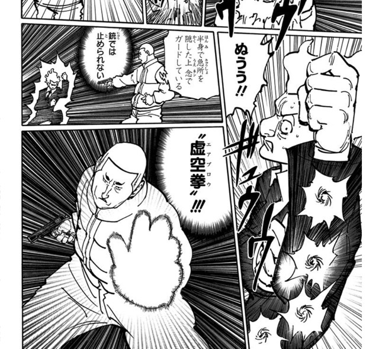

ビンセント
- 登録名
- ビンセント
- 分類
- 兵士
- 初期配置（現在地ではありません）
- 第1層 1014号室
初期配置は台帳の当初の担当先です。後任の人物や復元枠も含み、全員の出航時の在室を示すものではありません。後の展開は下の折りたたみにまとめています。
詳細には後の展開を含みます。下の項目を開くと表示できます。
人物詳細（後の展開を含む）
- 状態
- 死亡（第364話時点）
- 所属
- ベンジャミン陣営
- 役割
- ワブル王室警護兵として追加されたベンジャミン私設兵
- 任務
- 監視
- 最後の登録任務先
- ワブル陣営
- 最後の所在
所在候補（在室は未確認）：第1層 1001号室（第373話時点・場所は推定）
- 念使用の確認
- 念使用：確認済み
- 念系統
- 未確認
- 念能力
- 虚空拳（エアブロウ）。1014号室で使用するが、詳しい仕組みと発動条件は未解明

状態の経緯
- 第364話：死亡 — 第363話末にサンドラを殺害したとみられる状態で現れた後、第364話でビルとクラピカに制圧・拘束され、奥歯に仕込んだ毒で自死（原作確認記録あり） 根拠の出来事
編集状況
- 人物ID：P01-P03
- 状態の確認話数：第364話／根拠の出来事：E364-002（原作確認記録あり）
- 公開データの登録情報から生成したページです。個人メモ・編集内容・調査記録は含めません。
- 一覧の詳細でメモ・編集
情報源：公開人物台帳・公開出来事台帳。